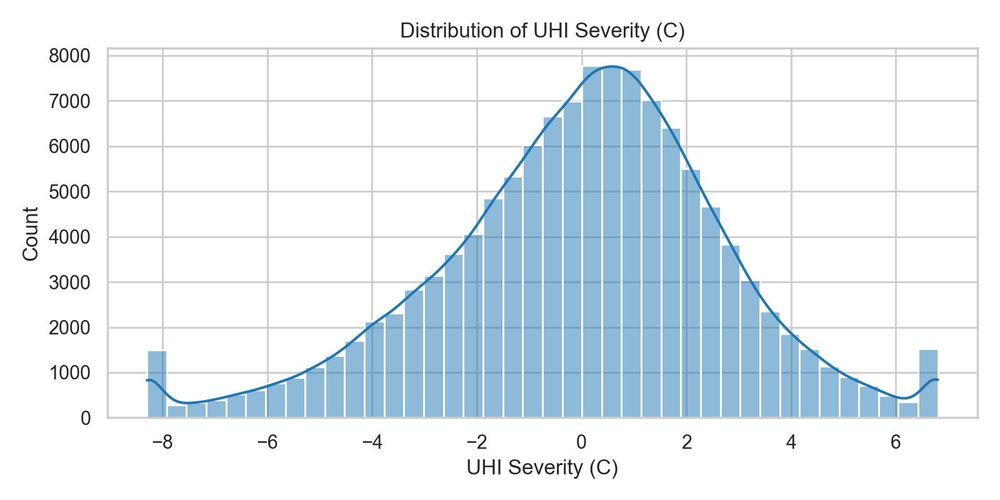
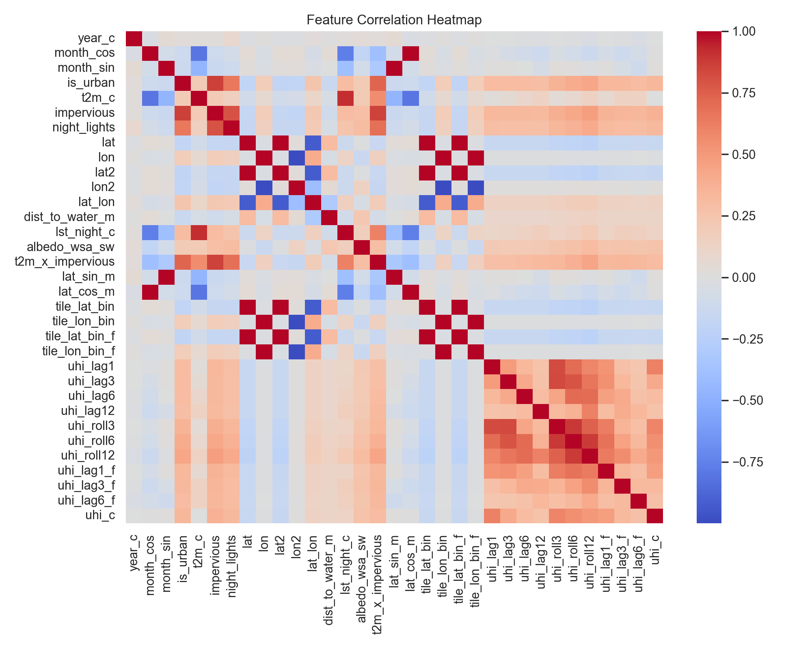
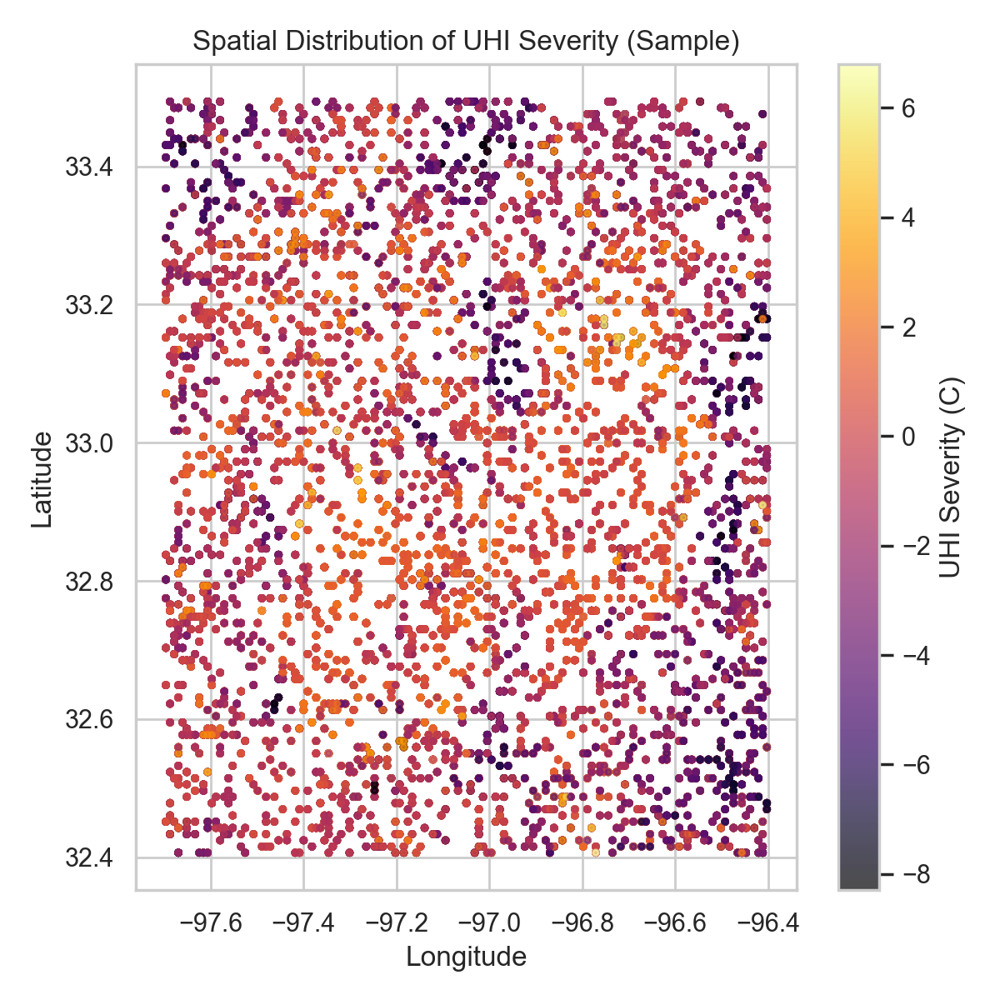
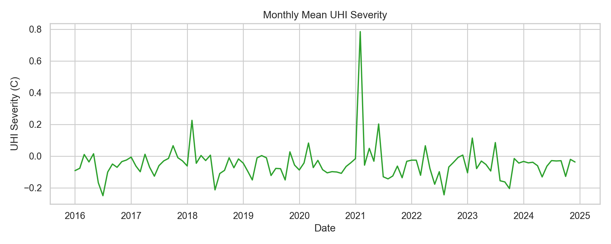
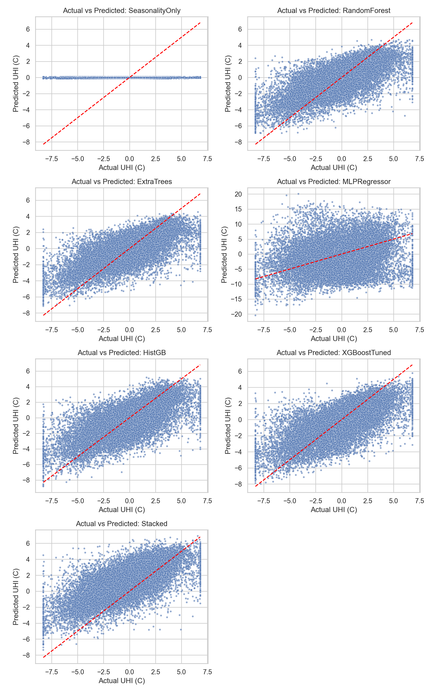
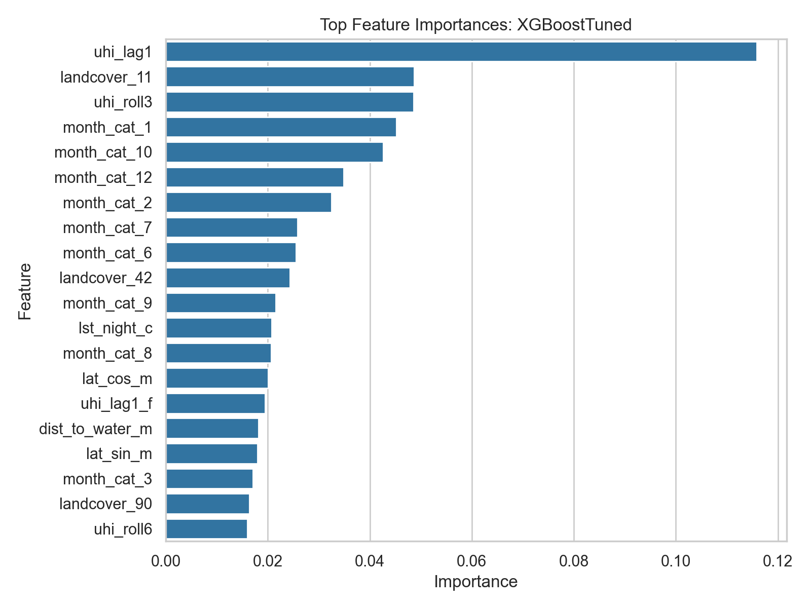
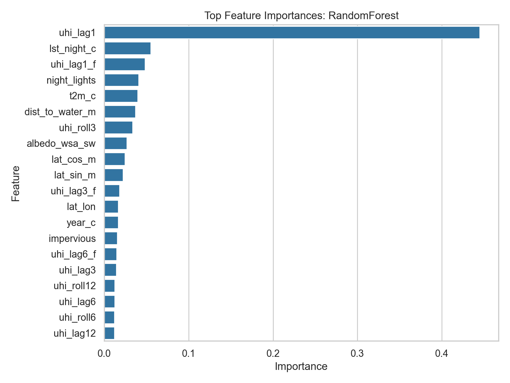
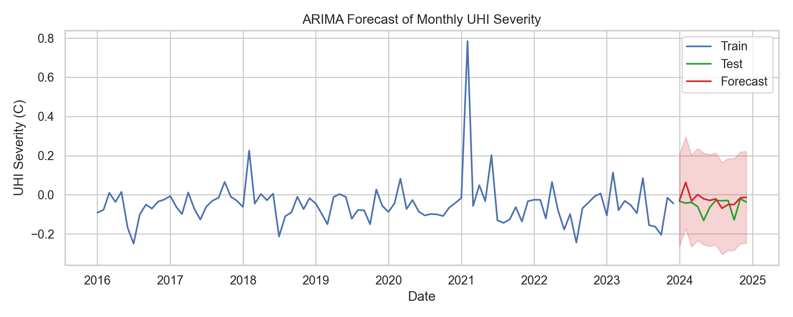

Figure 1: UHI distribution
Confirms a continuous target with broad spread, supporting regression design and robust error metrics.
Metrics and charts below are loaded directly from the latest pipeline outputs in outputs/tables and outputs/figures.
Loading metrics from output tables...
| Model | RMSE | MAE | R2 |
|---|
| Model | RMSE |
|---|
Each figure is paired with why it matters for model construction and evaluation.

Confirms a continuous target with broad spread, supporting regression design and robust error metrics.

Shows mixed dependence and collinearity, justifying nonlinear tree-based models.

Spatial clustering motivated explicit geographic terms and DFW-only filtering.

Seasonal periodicity motivated cyclical features and residualized training.

Visual calibration diagnostic to complement RMSE/MAE/R2 summaries.

Identifies dominant explanatory structure after leakage controls.

Cross-model agreement on key predictors increases interpretability confidence.

Demonstrates monthly forecast utility and uncertainty bands with baseline comparison.
Cross-sectional prediction is moderate but valid under leakage controls, while temporal forecasting is comparatively strong. This supports a two-part narrative: use ML for spatial prioritization and ARIMA for monthly planning cadence.